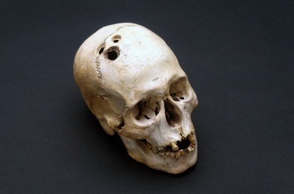

你好，欢迎来到《医学通识50讲》，我是薄世宁。
上节课，咱们从进化的角度讲到三个“不完美”带来了病，这只是站在生物进化的视角看待疾病，是疾病的远因。
但是要想治病，知道“不完美”是远远不够的。
如果你感觉不舒服到了医院，医生却说你这是“不完美”，你肯定不乐意。
所以，必须找到病的近因，也就是为病找一个病理生理解释。这就是找病因，是医学的基本需求。
这一讲的前半部分，先说说现代医学诞生之前，人们是怎么找病因的。
古人为了找病因做过哪些奇葩的尝试？
“四体液学说”是怎么回事？
美国开国总统华盛顿是怎么死的？
后半部分，说说现代医学怎么找病因。
你肯定还记得2003年中国爆发的“非典”（SARS），“非典”的真正病因是怎么找到的？
通过了解找病因的方法，你就能大概掌握整个医学的发展简史。
从远古人“开脑洞”到华盛顿之死
远古时代生产力低下，也没啥科学。
古人把一切不能理解的现象都用神鬼解释，比如电闪雷鸣、风云雨雪。
生病是古人不能理解的，所以就认为病是神的惩罚或者魔鬼附体。
那个时候，谁要是头疼、癫痫或者得了精神病，古人就认为是鬼钻进脑袋里了。
于是就在脑袋上打洞让鬼跑出来，认为这样病就好了。
在世界各地，都发现了被打开脑洞的人类头骨化石。

这种找病因的逻辑是把病和人看成两个分开的东西，病是鬼，人是人。
鬼进入人体，人就病了；鬼离开人体，病也就好了。
这个阶段根本算不上医学，只是原始的神鬼巫术而已。这是医学诞生之前的蒙昧状态。
到了公元前400、500年左右，距离现在2000多年前，有个医生站出来了。
他认为，没有什么神鬼，病是人体内部的事。他推翻了把病和人看成是两个东西的想法。
这个人就是医学之父——希波克拉底（Hippocrates）。
他创立了“四体液学说”，认为人体是由四种体液组成的，分别是血液、黏液、黑胆汁、黄胆汁。
体液平衡，人就健康；如果不平衡，就是病了。
现在看来，这套理论没有科学依据。
但是我认为，希波克拉底之所以伟大，就是因为他把医学从神鬼的桎梏中解救了出来。
从此医学开始理性理解疾病了，人们开始从自身找病因。
后面的课程还会讲到希波克拉底对于医学的贡献，这里就不多说了。
四体液学说存在了2000多年，在这套理论体系里，最出名的治疗方法就是放血疗法。
医学领域大名鼎鼎的《柳叶刀》杂志（The Lancet），名字里的“柳叶刀”最初就是放血用的工具。
放血疗法害人不浅。
1799年，也就是乾隆皇帝驾崩的那年，美国开国总统华盛顿也病了，但他得的是喉炎，呼吸困难。
你肯定会想，喉炎怎么会致死呢？况且这个病人还贵为总统？
就是因为得病后，华盛顿本人对放血疗法深信不疑，他让医生给他放血。
据说一天放了2300毫升的血，人体一共才有4000毫升左右的血。结果，当天晚上华盛顿就去世了。
现在听起来，你会不会觉得很荒诞呢？
用四体液平衡理论找病因存在两方面的问题，所以注定失败。
首先，没有科学基础，靠的是哲学思辨。
不管什么病，都用体液不平衡来解释，结果什么问题也解决不了。
其次，一个学说没有边界，无所不能，它也就失去了成长的空间。
所以，用四体液平衡理论找病因的方法存在了2000年，没有积累下太有用的东西。
科学到来之后，这种理论也就逐步退出了历史舞台。
果子狸、蝙蝠与人类“非典”
科学促进了现代医学的诞生。
我们通常把人体解剖学、生理学、病理学这三门基础学科的成立，看做是现代医学诞生的标志。
现代医学建立了一整套找病因的科学方法。
不仅要找发病部位，还要研究发病机制和致病因子，致病因子就是引起疾病的物质实体。
比如，阑尾炎的发病部位是阑尾，致病因子是细菌，发病机制就是细菌在阑尾中过度繁殖，引起的炎症反应。
研究方法有了，找病因听起来似乎挺简单。
最开始，人们只能看到表面的病因。
比如感冒是着凉了，是累了，是生活方式不对了。
但是随着新的科学技术出现，找病因的方法越来越深入，也越来越难。
显微镜发明后，人们对病的理解从宏观到了微观，发现微生物可以是致病原因。
这个时候，人们知道了感冒是由于病毒攻击人体导致的上呼吸道感染。
再比如，胃里面有一种幽门螺旋杆菌。它不仅可以引起胃炎、胃溃疡、口腔异味、贫血，甚至大部分胃癌的罪魁祸首，也是这种细菌。
这样，找病因就进入到微生物层面了。
研究再深入，我们了解了DNA双螺旋结构，看到了基因。
这个时候，人们发现所有的慢性病都和基因有关。
比如肺癌。
同样是肺癌，病人和病人的致癌基因不同。甚至同一个病人，肺癌组织的外层和内层基因变异也不同。
利用科学技术，人们终于找到了当年“非典”的病因。
你一定还记得2003年中国的“非典型肺炎”，简称“非典”（SARS）。
那个时候，我在一线治疗传染性最强、病情最重的病人。
我一共有三个同学在工作中被感染。其中一个牺牲，另外一个永远地遗留下了股骨头坏死和严重的抑郁。
“非典”这个病就这么可怕，所以必须找到病因，否则它还可能卷土重来。
这个找病因的过程，有点像破案。
第一步：先找发病部位。
这个容易，给患者拍X光片发现病变在肺，因此是肺炎。
第二步：找病原体。
这个过程最难。
从病人体内、痰液、血液中，甚至死者的肺内，不断寻找是否有细菌或者病毒。这个找病毒的过程叫做病毒的分离。
最后，终于找到了一种冠状病毒。那么这种病毒是致病因子吗？未必。
第三步：把嫌疑病毒给动物接种。
发现动物感染后，症状和人一模一样。所以致病因子就是它，我们把它称为“非典”病毒。
到此也就完成了关键的一步。但是这种病毒是哪儿来的呢？
第四步：扩大搜索范围，开始地毯式搜查。
最后找到了果子狸，果子狸身上的病毒和这种“非典”病毒最接近。
那么果子狸是真凶吗？后来发现，不是。
继续寻找，到了2017年12月份，“幕后黑手”终于找到了。
果子狸只是个“背锅”的。
病毒真正的来源是一种遥远地区山洞里的蝙蝠，这种蝙蝠体内有一种病毒的基因和“非典”病毒的基因完全匹配。
铁证如山，到此真相大白。
“非典”的病因不是神鬼惩罚，也不是四体液不平衡，而是蝙蝠身上的一种病毒，通过果子狸传染给人，导致了烈性传染病爆发。
从当年“非典”发病到找到确切的病因，这个过程足足用了15年。涉及了医学的全部学科，用到了现代医学几乎所有的技术手段。
一切病因都有病理基础
你可能觉得找病因的过程已经很复杂了。但是，寻找传染病的病因还是最简单的。
有些病可以找到发病部位，但是找不到确切的发病机理。
比如渐冻人。
病人四肢、躯干、胸部、腹部的肌肉逐渐无力和萎缩。但是，我们仍然搞不清楚确切的病因。
是基因问题？还是某种特殊病毒？不知道。
找不到病因，也就没有治疗方法。
甚至，有的病研究了几十年，找了几十年的病因，最后发现它根本不是病。
比如同性恋。
最初，医生把他们称为“同性恋患者”，研究这些人的激素水平，研究他们儿童时期的经历，甚至研究大脑结构。
想尽了一切办法，到最后发现这根本不是病，只是大千世界不同的选择而已。
甚至还有很多病一点线索都没有，连诊断都做不出来。
很多病人直到去世，医生也没搞清楚病因。
你可能就会产生疑问了：是不是在某些特殊的、疑难的疾病面前，现代医学找病因的方法失灵了？
我可以肯定地告诉你：不会。不仅不会失灵，而且永远可行。
在我看来，现代医学找病因方法是无敌的。
没有这套方法，什么病的病因都找不到；有了这套方法，找到任何病的病因只是时间问题。
比如抑郁症。
在以前找不到病因，大家认为抑郁症就是心理问题。
但是到了2018年2月，浙江大学胡海岚教授在《自然》（Nature）杂志上发表的研究指出，大脑里面有个关键部位——缰核，是引起抑郁症的关键部位。
缰核异常放电，就可以抑制多巴胺的分泌，多巴胺被抑制了，人也就抑郁了。
所以，只要坚信任何病都有病理基础，都不是凭空产生的，那么在未来，越来越多的病就会得到解释，找到合理的病因，得到科学的治疗。
总结
思考题
既然科学这么发达，咱们也相信科学，为什么有的时候遇到难事，还是有很多人相信鬼神呢？
欢迎发到留言区，咱们一起互动。
下节预告
下一讲，咱们说说什么是病的症状。症状为什么可以保护我们？为什么症状不能过多干预？